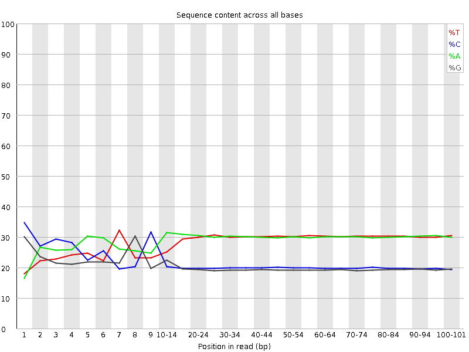

![[OK]](Icons/tick.png) Basic Statistics
Basic Statistics
| Measure | Value |
|---|---|
| Filename | olyo-rad-01.fastq |
| File type | Conventional base calls |
| Encoding | Sanger / Illumina 1.9 |
| Total Sequences | 222197679 |
| Filtered Sequences | 0 |
| Sequence length | 101 |
| %GC | 40 |
Per base sequence quality
Per sequence quality scores

![[WARN]](Icons/warning.png) Per base sequence content
Per base sequence content

![[FAIL]](Icons/error.png) Per base GC content
Per base GC content

Per sequence GC content
Per base N content
Sequence Length Distribution
Sequence Duplication Levels
Overrepresented sequences
No overrepresented sequences
Kmer Content
| Sequence | Count | Obs/Exp Overall | Obs/Exp Max | Max Obs/Exp Position |
|---|---|---|---|---|
| GGGGG | 34569675 | 5.0768166 | 12.961188 | 1 |
| CCCCC | 35530795 | 4.4639106 | 17.183435 | 2 |
| GCAGG | 32718125 | 3.1033363 | 159.08586 | 8 |
| TGCAG | 38117465 | 2.447543 | 111.360596 | 7 |
| CAGGG | 22268760 | 2.112207 | 34.152065 | 9 |
| GGGGC | 14626665 | 2.0820174 | 5.879652 | 1 |
| CACAC | 33357745 | 1.9807256 | 5.125629 | 1 |
| GCCCC | 14374595 | 1.8632162 | 5.0248523 | 1 |
| CCCCT | 21167335 | 1.8573754 | 8.354749 | 3 |
| GGTCA | 28667155 | 1.8407334 | 5.6018405 | 1 |
| CCCTG | 19453380 | 1.7611071 | 7.595264 | 4 |
| CCCCA | 20297580 | 1.7531271 | 6.2006283 | 1 |
| GGCCC | 13095770 | 1.751281 | 5.704191 | 1 |
| CTGCA | 27744475 | 1.726735 | 41.114086 | 6 |
| ACCCC | 19974285 | 1.7252035 | 8.461804 | 1 |
| CAGGT | 25880725 | 1.6618152 | 34.99436 | 9 |
| CAGGA | 25878265 | 1.6355997 | 30.622873 | 9 |
| CACTG | 26038325 | 1.6205492 | 6.2747746 | 4 |
| CCTGC | 16402320 | 1.4848956 | 12.943062 | 5 |
| TGCTG | 22718410 | 1.4820015 | 6.0660205 | 4 |
| ATGCA | 34625415 | 1.4815037 | 22.054665 | 6 |
| CCATG | 23487400 | 1.4617871 | 7.338468 | 2 |
| CCCTA | 23969420 | 1.4459379 | 5.5938563 | 1 |
| CTGTG | 22006005 | 1.4355289 | 5.097043 | 4 |
| GTCTG | 21998790 | 1.4350582 | 7.9052124 | 4 |
| CCCCG | 10827840 | 1.4034905 | 5.182749 | 1 |
| TTGCA | 32179075 | 1.398768 | 17.651691 | 6 |
| GTGCA | 21726885 | 1.395095 | 30.79665 | 6 |
| GGCCA | 15136145 | 1.3915495 | 5.558931 | 1 |
| CCCGG | 10058680 | 1.3451347 | 5.437222 | 1 |
| CAGGC | 14399365 | 1.3238131 | 32.954582 | 9 |
| TTTGC | 29311920 | 1.2944367 | 5.3417864 | 5 |
| TGCAT | 29432205 | 1.2793664 | 5.3541336 | 7 |
| ATGTG | 28444080 | 1.2756195 | 5.478102 | 4 |
| TCTGC | 20164275 | 1.274959 | 10.663267 | 5 |
| CATGC | 20016835 | 1.2457892 | 8.746203 | 5 |
| TGTGC | 18650220 | 1.2166191 | 15.98745 | 5 |
| TGCAC | 18687900 | 1.1630803 | 6.6805854 | 7 |
| GCTGC | 12307735 | 1.1495447 | 12.836295 | 5 |
| GGTGC | 11891810 | 1.1459161 | 10.005082 | 5 |
| ACTGC | 18375520 | 1.1436385 | 16.886597 | 5 |
| AATGC | 25906930 | 1.1084694 | 8.793271 | 5 |
| CGGAC | 11713275 | 1.0768661 | 5.922155 | 2 |
| GATGC | 16415800 | 1.0540673 | 9.657923 | 5 |
| CATAC | 24707860 | 1.0246739 | 5.5346513 | 2 |
| GTTGC | 15447485 | 1.0076935 | 5.2108016 | 5 |
| ATTGC | 22960085 | 0.9980347 | 8.799217 | 5 |
| CCGAG | 10690375 | 0.9828253 | 5.49701 | 1 |
| CGCCA | 10791750 | 0.96165234 | 5.521156 | 2 |
| GCTCA | 15374500 | 0.9568639 | 5.190286 | 1 |
| CGTGC | 9254385 | 0.8643612 | 7.8801403 | 5 |
| AGTGC | 13155880 | 0.84474605 | 6.127049 | 5 |
| CGCTG | 8971935 | 0.83798033 | 5.6876216 | 2 |
| TCGCC | 8909980 | 0.80661696 | 5.0569296 | 1 |
| CCGCA | 8416055 | 0.74995434 | 7.506189 | 1 |
| GCGCT | 6521700 | 0.609128 | 5.445375 | 1 |